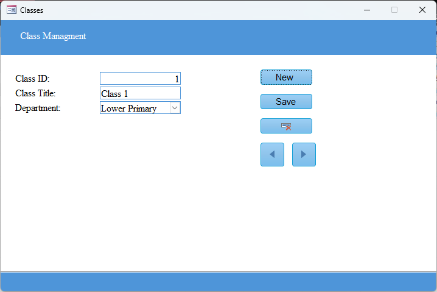
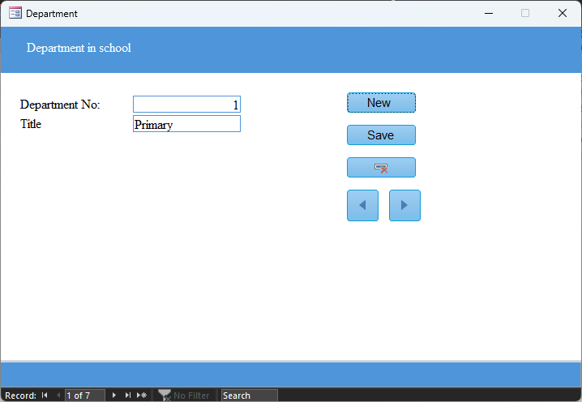
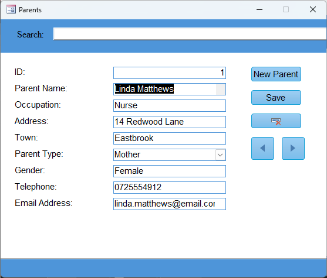
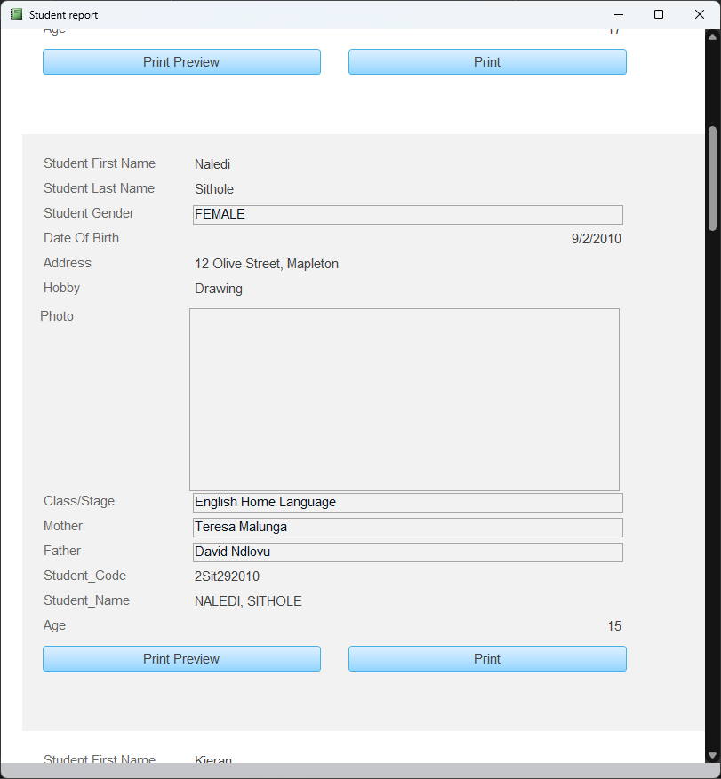

Student Database Management System — Project Report
1. Introduction
The Student Database Management System (SDMS) is a Microsoft Access–based project designed to simplify student
record management for schools and small educational institutions.
It acts as a mini Learning Management System (LMS) that stores and manages student details, parent information,
class structures, and departments in a centralized database.
The system provides an intuitive interface for users to add, edit, and print student data using custom-built forms.
Its goal is to make educational data more accessible and organized while ensuring data consistency and ease of use.

2. Objectives
The primary objectives of the system are:
To create a centralized student database for efficient record-keeping.
To simplify data entry and retrieval for students, parents, and classes.
To enable quick access and search for any student record.
To allow report generation and printing of student profiles.
To maintain data integrity through relational links between tables.
3. Tools and Technologies Used
Microsoft Access — for database design, forms, and relationships.
Visual Basic for Applications (VBA) — for automation and form control.
Windows 10/11 Environment — for system testing and operation.
4. Database Structure
The database is built around four main tables and one query, each serving a specific function.
Main Tables
Students Table – Stores all student-related details.
Parents Table – Records parent/guardian information.
Classes Table – Defines the available classes.
Departments Table – Lists academic departments.
Relationships
Each student is linked to two parents and one class.
Each class belongs to a department.
Queries such as Students Extended combine these tables for reports.
5. User Interface Design
a) Department Form
This form manages department information, allowing users to create, save, and navigate records easily.
It ensures each class is associated with a specific department.

b) Parents Form
The Parents Form stores details of each student’s parent or guardian.
Parent Name
Occupation
Address and Town
Parent Type (Mother/Father)
Gender
Telephone and Email

c) Classes Form
The Classes Form manages class information, linking each class to a department.
d) Student Information Form
Main form for entering and managing student details.
Name, Gender, Date of Birth
Address and Hobby
Class/Stage
Parent selection (linked from Parents table)
Auto-generated Student Code and Name
Photo placeholder
Functional buttons include:
New Student — Clears form for new entry.
Save — Stores new student data.
Register New Parents — Opens Parents Form.
Add New Class — Opens Classes Form.
Print — Generates a printable profile.
e) Student Report
The Student Report displays formatted, printable information about each student.

6. System Features Summary
Feature
Description
Parent Management
Record and update parent/guardian data.
Class Management
Manage class titles and department associations.
Search Functionality
Quickly locate specific records via the search bar.
Code Automation
Generates unique student codes automatically.
Report Printing
Create and print individual student profiles.
Data Linking
Maintains relationships between Students, Parents, and Classes.
7. Benefits
Simple, user-friendly interface for administrators and teachers.
Reduces paperwork and manual record-keeping.
Facilitates quick data retrieval and report generation.
Provides a base for expanding into a full LMS.
8. Limitations & Future Enhancements
Current Limitations
Runs locally in Microsoft Access only.
No authentication or user roles.
Limited scalability for large institutions.
Future Improvements
Convert to a web-based system using MySQL or PHP.
Add attendance and grading features.
Implement multi-user and cloud database syncing.
Include dashboards for analytics and reporting.
9. Conclusion
The Student Database Management System demonstrates how Microsoft Access can create a complete school
information system that improves data accuracy and simplifies administration.